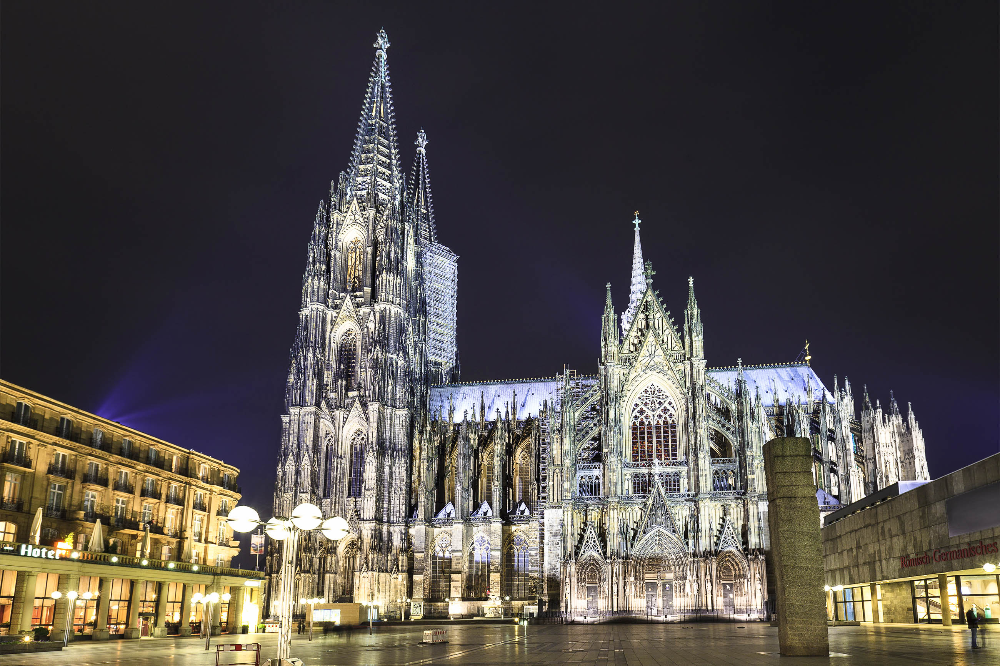
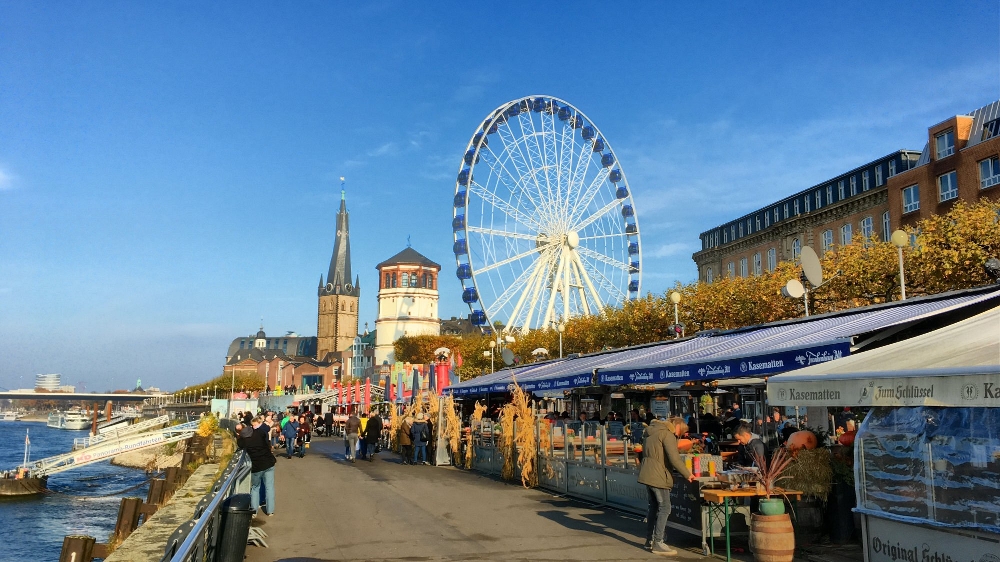
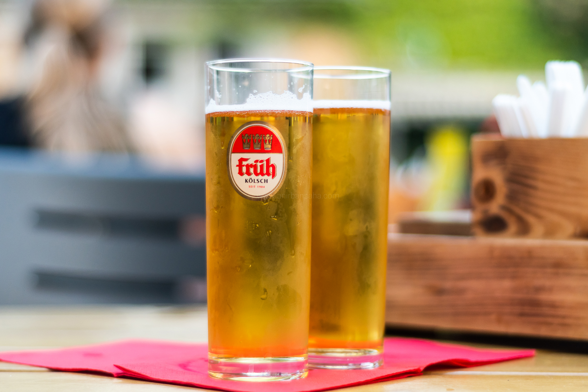
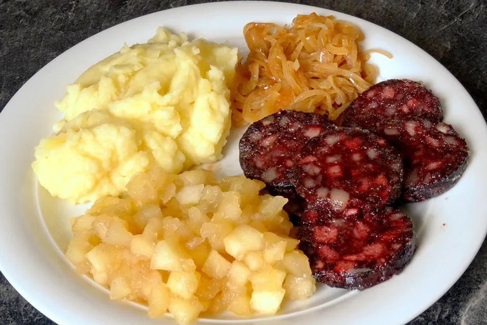

Cologne Cathedral and Old Town
Compare bomb-damaged surroundings with the rebuilt square and river promenade.
Past
Present

City
A Rhine city with Roman roots, a world‑famous cathedral, and one of Germany's liveliest Carnival traditions.
Explore multiple Rhine-side views to see how Cologne rebuilt and reimagined itself.
Compare bomb-damaged surroundings with the rebuilt square and river promenade.

See how a railway bridge turned into a modern tourist spot decorated with padlocks.

Contrast industrial riverfront scenes with today’s recreational areas and modern buildings.

Cologne was founded as a Roman colony and later became an important medieval trading city. Its Gothic cathedral, begun in the 13th century and completed in the 19th, symbolises the city's long religious and architectural history. Much of Cologne was destroyed during the Second World War, but the cathedral survived and reconstruction reshaped the city into a modern regional center on the Rhine.
Cologne is famous for its friendly atmosphere and humor. Locals pride themselves on the annual Kölner Karneval, when parades, costumes, and street parties take over the city. The Rhine promenade, museums, and a strong media industry create a lively urban culture. The local dialect, Kölsch, appears in songs and everyday expressions, providing authentic material for language learners.

A light, top‑fermented beer served in small cylindrical glasses. Each brewery has its own variation and traditional pub.

Despite its name ("half a chicken"), this is a rye roll with cheese, mustard, and pickles — a beloved local snack with a quirky Cologne sense of humor.

Literally "heaven and earth": mashed potatoes and apple sauce, often served with fried black pudding.
Explore the awe-inspiring scale of Cologne Cathedral in full 3D.